Musée d'Orsay
From Railway Station to Museum
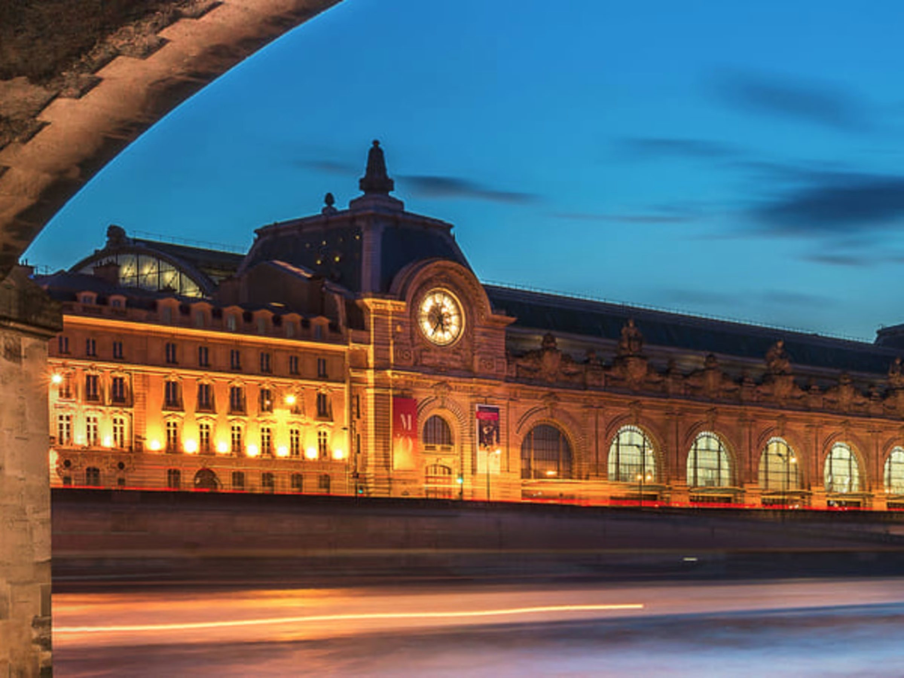
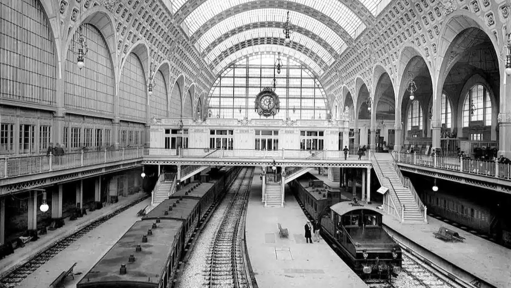
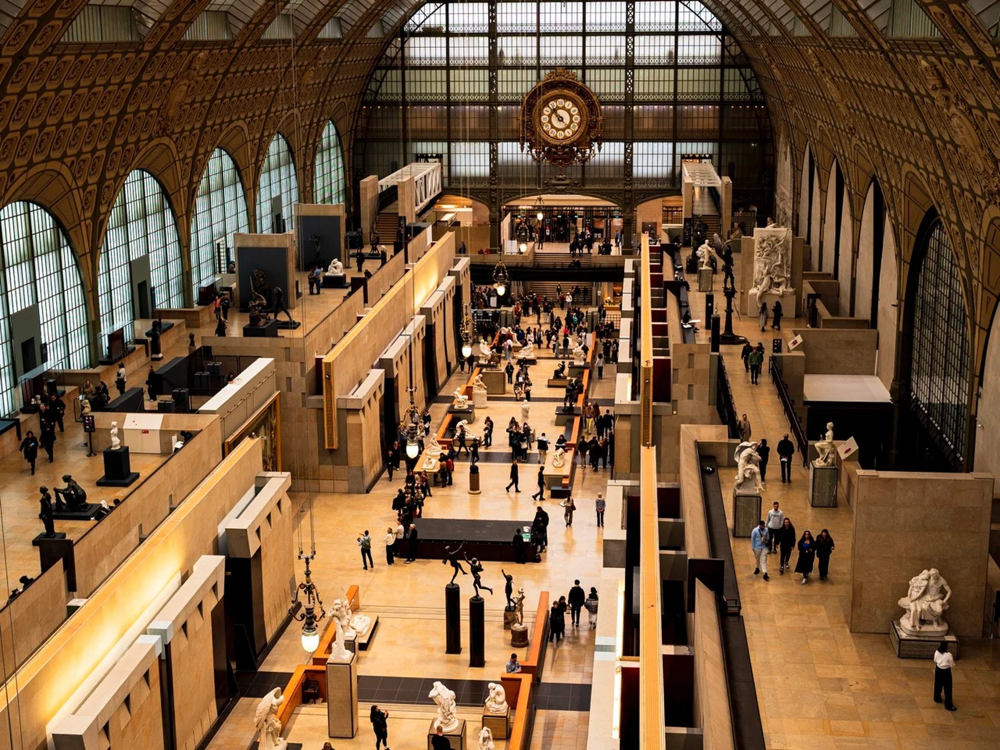
From Railway Station to Museum
Musée d'Orsay is one of the world's most visited art museums, housed inside a former Paris railway terminal — the Gare d'Orsay — built by architect Victor Laloux for the 1900 Exposition Universelle. Rendered obsolete by modern rail traffic within decades and threatened with demolition by the 1970s, the station was instead preserved and transformed by architect Gae Aulenti, reopening as a museum in 1986. The building remains one of the most cited examples of adaptive reuse and industrial heritage preservation in modern architectural history.
This project explores the semantic representation of the transformation of the Gare d'Orsay into the Musée d'Orsay through Semantic Web technologies and Digital Humanities methodologies. The project models people, places, organisations, events, concepts, and textual entities related to this transformation in order to formalise their historical, architectural, and cultural relations. The workflow combines theoretical modelling, conceptual (OWL) ontology design, TEI/XML encoding, and RDF transformation. The RDF dataset reuses the Schema.org, FOAF, SKOS, Dublin Core Terms, and BIBO vocabularies and reconciles entities to external authority files including Wikidata, VIAF, ISNI, GeoNames, and the Library of Congress Subject Headings, in order to support interoperability and Linked Open Data integration. The resulting semantic structure enables the representation of architectural, conceptual, and historical knowledge through RDF triples and ontology-based relations, transforming the selected narrative into a machine-readable and interoperable knowledge graph.
"From a railway station into a space dedicated to art." — Musée d'Orsay: A Great Metamorphosis
Entities identified in the source text and encoded in the TEI/RDF layer — spanning objects and places, people, an event, concepts, and media and digital resources.
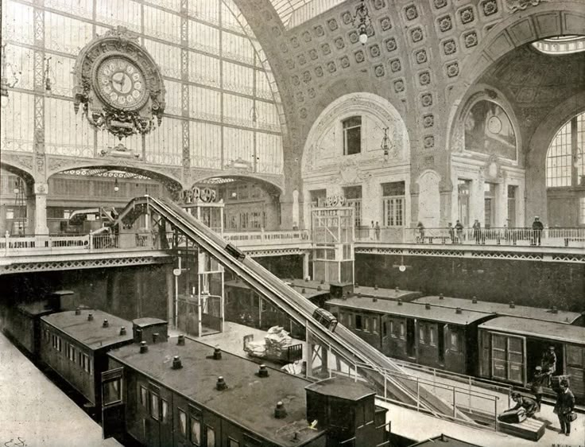
01 Gare d'Orsay Object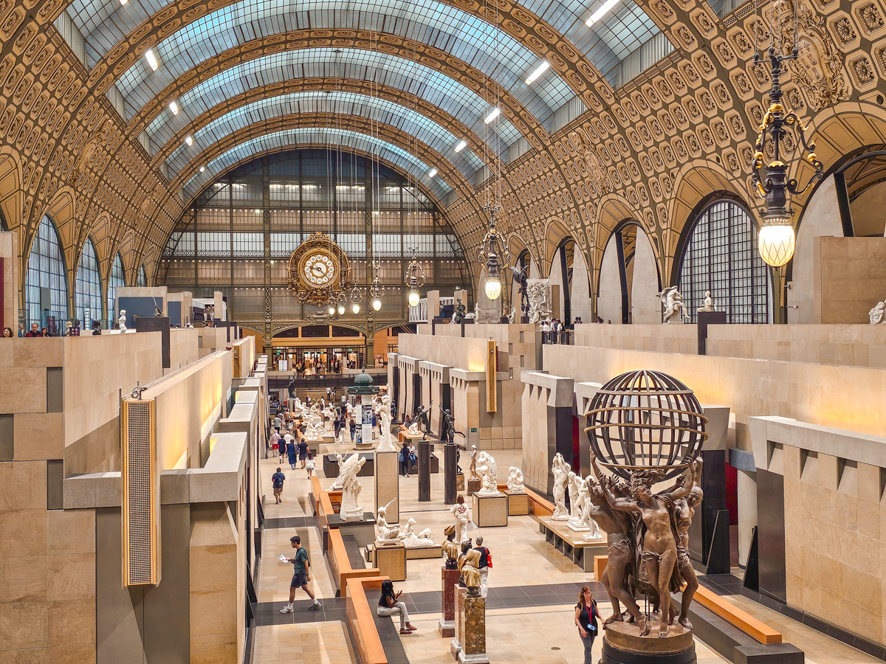
02 Musée d'Orsay Object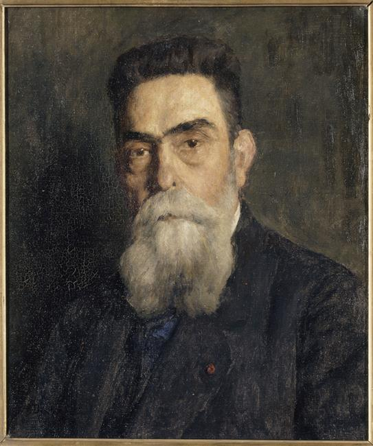
03 Victor Laloux Person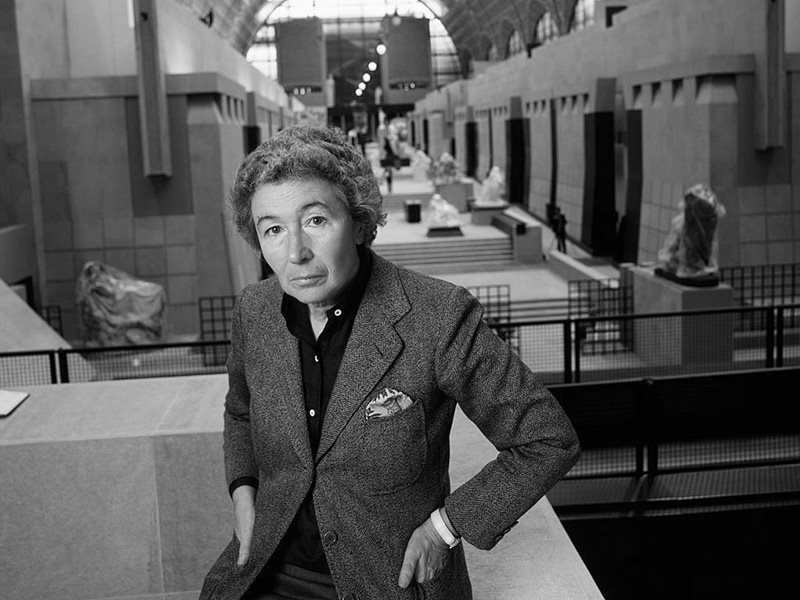
04 Gae Aulenti Person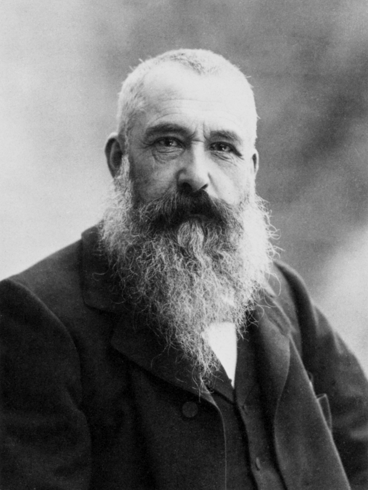
05 Claude Monet Person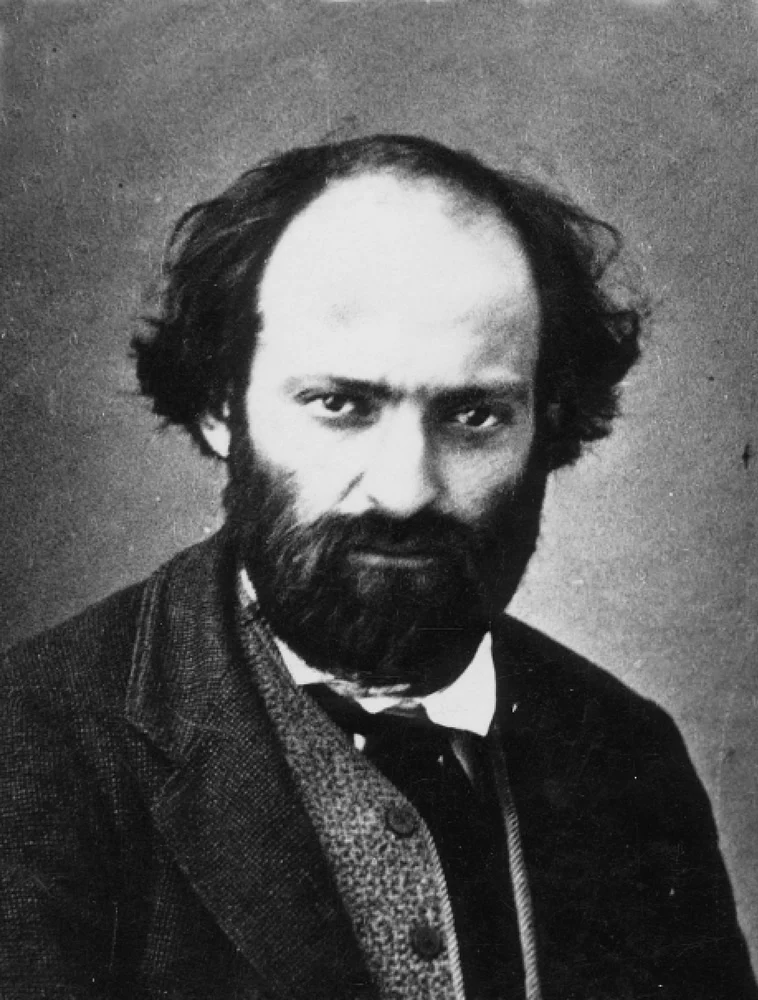
06 Paul Cézanne Person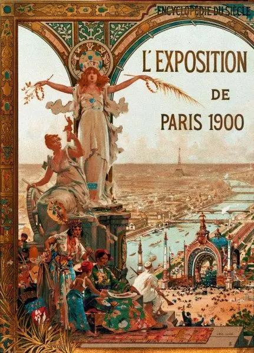
07 Exposition Universelle of 1900 Event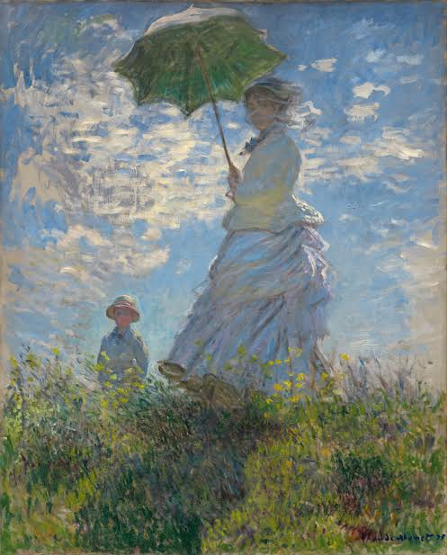
08 Impressionism Concept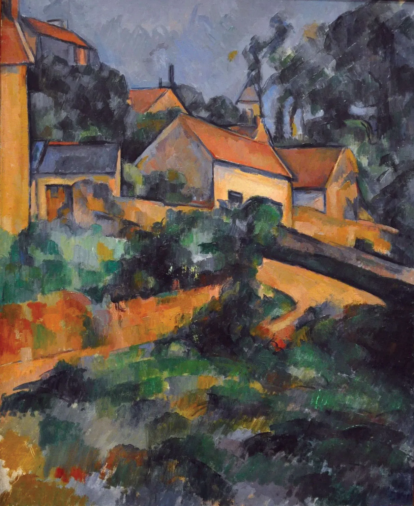
09 Post-Impressionism Concept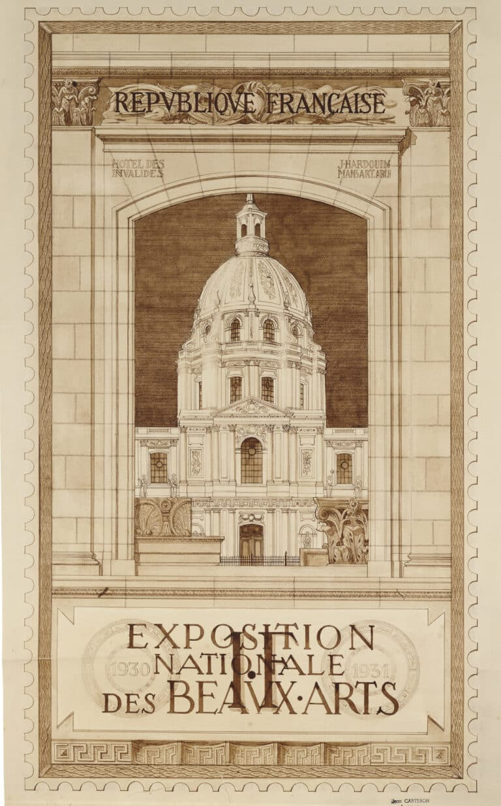
10 Beaux-Arts style Concept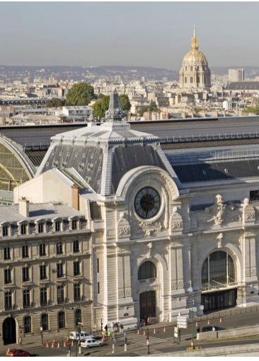
11 Musée d'Orsay: A Great Metamorphosis Reference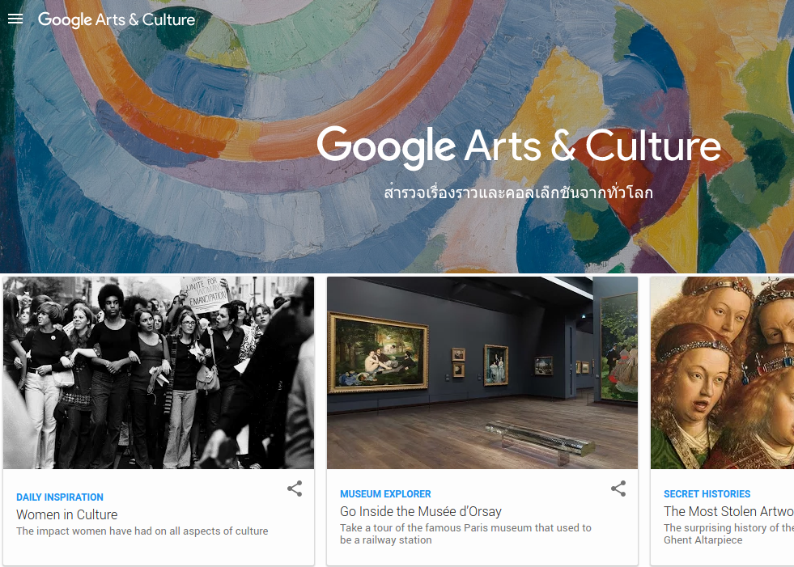
12 Google Arts & Culture Digital resource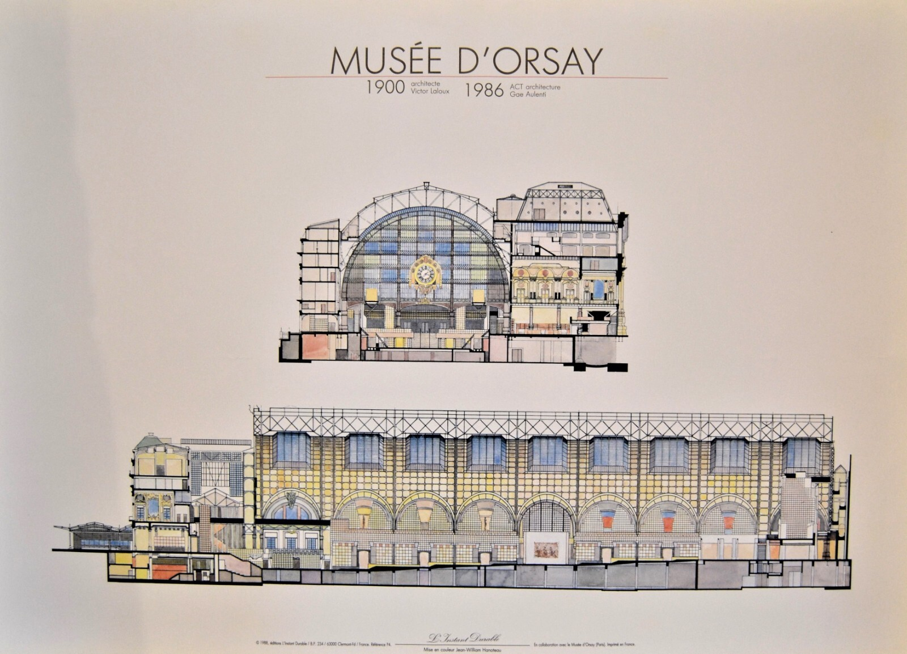
13 Adaptive reuse (Wikipedia) ReferenceAccess the underlying models and structured outputs of the project.
An interactive mind map of the theoretical model and a Graffoo-style OWL diagram of the formal conceptual model.
Explore →Structured textual encoding of the project narrative and the entities mentioned in the source text.
View Source →Schema.org / FOAF / SKOS / DCTerms / BIBO triples describing the entities and relations in the dataset.
View Source →